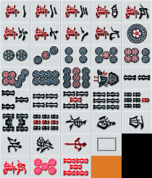
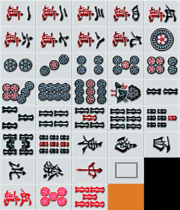

Список яку
Яку - определенные условия, которые должны быть выполнены для того, чтобы игрок мог выиграть раздачу.
Наличие хотя бы одного яку в руке обязательно для объявления победы.
Следует подчеркнуть, что
дора не дает яку, она всего лишь дает некоторое увеличение стоимости руки.
Не имея на руке ничего кроме дор, объявить победу нельзя.
Ниже представлен список яку с оглавлением. В оглавлении указана стоимость яку в ханах в скобках
(закрытая рука / открытая рука). "Минус" означает, что комбинация не работает на открытой руке.
Комбинационные яку
Комбинационные яку представляют собой некоторые комбинации тайлов внутри руки
Обычно в игре любое развитие руки начинается в сторону любого из комбинационных яку. Другими словами, речь идет о таких яку,
которые возможно и нужно собирать намеренно. Условно комбинационные яку можно разделить на несколько групп.
Яку на ценных тайлах
Один из самых часто собираемых яку - без сомнения,
якухай (
役牌).
 

Якухай представляет собой
коцу или
канцу
любых драконов, либо
коцу или
канцу
ветров места или ветров раунда. Якухай дает 1 хан.
Несколько якухаев могут суммироваться, кроме того, якухай ветра, являющегося одновременно и ветром раунда, и ветром места, является
двойным якухаем и дает 2 хан.
Два
коцу или
канцу драконов и
тойцу драконов дают комбинацию
шосанген (
小三元).
Сам по себе шосанген дает только 2 хан, однако поскольку к нему плюсуется минимум 2 якухая, такая рука будет стоить не менее 4 хан.
Три
коцу или
канцу драконов дают
комбинацию
дайсанген (
大三元).
Дайсанген -
якуман.
Три
коцу или
канцу ветров и
тойцу ветров дают комбинацию
шосууши (
小四喜).
Шосууши -
якуман.
Четыре
коцу или
канцу ветров дают
комбинацию
дайсууши (
大四喜).
Дайсууши -
якуман (в некоторых правилах дайсууши является двойным якуманом).
Рука, состоящая только из благородных тайлов, сама по себе является комбинацией
цуиисо (
字一色).
Цууисо -
якуман.
Яку на коцу / канцу
Комбинацию
тойтой (
対々和) содержит рука, состоящая только из
коцу
и
канцу.
Тойтой стоит 2 хан.
Три закрытых
коцу или
канцу
сами по себе являются комбинацией
сананко (
三暗刻).
Сананко дает 2 хан. Рука может быть открытой, закрытыми должны быть сами сеты.
Если рука открыта и в руке ожидание в
шанпон,
ананко засчитывается только по цумо, т.к. при победе по рон, пон считается открытым.
Три одинаковых
коцу или
канцу разных
мастей называются
саншоку доко (
三色同刻).
Саншоку доко всегда дает 2 хан.
Три
канцу в руке называются
санканцу (
三槓子).
Санканцу дает 2 хан. Каны могут быть как закрытыми, так и открытыми.
Четыре
канцу в руке называются
сууканцу (
四槓子).
Сууканцу -
якуман. Каны могут быть как закрытыми, так и открытыми.
В случае, если все четыре кана объявил один и тот же игрок, игра продолжается (пересдача не объявляется), но с этого момента игроки не
вправе объявлять каны.
Четыре закрытых
коцу или
канцу являются
комбинацией
сууанко (
四暗刻).
Сууанко -
якуман.
Если в руке ожидание в
шанпон, сууанко
засчитывается только по цумо, т.к. при победе по рон, пон считается открытым. В случае победы по рон, засчитывается сананко.
Яку на последовательностях
Пин-фу (
平和) - рука без миниочков (фу), в каком-то смысле антагонизм тойтоя. Рука должна состоять
только из
шунцу,
не содержать якухайных пар и иметь ожидание
рянмен.
Пин-фу стоит 1 хан и собирается исключительно на закрытой руке.
Комбинация
иипейко (
一盃口) засчитывается тогда, когда в руке есть два одинаковых
шунцу одной и той же масти.
Как и пин-фу, иипейко стоит 1 хан и собирается исключительно на закрытой руке. Иипейко
не засчитывается, если в руке
есть комбинации чиитойцу или рянпейко.
Комбинация
рянпейко (
二盃口) засчитывается тогда, когда в руке есть две пары одинаковых
шунцу, каждая пара - одной и той же масти.
Рянпейко стоит 3 хан и собирается исключительно на закрытой руке. Если в руке есть рянпейко, комбинации чиитойцу и иипейко
не засчитываются.
Если в руке есть три одинаковых
шунцу разных мастей, в руке
содержится комбинация
саншоку (
三色同順).
Саншоку стоит 2 хан на закрытой руке и 1 хан на открытой.
Иццу (
一気通貫) представляет собой три
шунцу одной и той же масти, образующие ряд от 1 до 9.
Иццу стоит 2 хан на закрытой руке и 1 хан на открытой.
Одноцветы
Рука, состоящая из благородных тайлов и тайлов одной и той же масти, содержит комбинацию
хоницу (
混一色).
Хоницу стоит 3 хан на закрытой руке и 2 хан на открытой.
Рука, состоящая исключительно из тайлов одной и той же масти, содержит комибнацию
чиницу (
清一色).
Чиницу стоит 6 хан на закрытой руке и 5 хан на открытой.
Рука, имеющая чиницу в форме 1112345678999, называется
чууренпото (
九蓮宝燈).
Чууренпото -
якуман. Собирается только на закрытой руке.
Рука, имеющая хоницу из всех зеленых тайлов бамбуков (2,3,4,6,8) и зеленых драконов, называется
рюисо
(
緑一色).
Рюисо -
якуман. В руке обязана присутствовать хотя бы пара зеленых драконов.
Терминалы и благородные
Рука, в которой вообще нет ни благородных, ни терминальных тайлов, содержит комбинацию
тан-яо
(
断ヤオ九).
Тан-яо стоит 1 хан. В некоторых правилах тан-яо не работает на открытой руке.
Рука, в каждом из сетов которой есть терминальный или благородный тайл, содержит комбинацию
чанта
(
全帯ヤオ). Пара также должна быть терминальной или благородной.
Чанта стоит 2 хан на закрытой руке и 1 хан на открытой. В руке должно быть хотя бы одно
шунцу, иначе вместо чанты засчитывается хонрото.
Если в руке содержатся только благородные или терминальные тайлы, рука содержит комбинацию
хонрото
(
混老頭). Такое требование исключает возможность существования
шунцу в руке, поэтому хонрото может сочетаться
с одной из двух комбинаций - тойтой или чиитойцу.
Хонрото стоит 2 хан. Если в руке есть хонрото, комбинация чанта
не засчитывается.
Рука, в каждом из сетов которой есть терминальный тайл, содержит комбинацию
джунчан (
純全帯ヤオ).
Пара также должна быть терминальной. Благородных тайлов в руке быть не должно.
Джунчан стоит 3 хан на закрытой руке и 2 хан на открытой. В руке должно быть хотя бы одно
шунцу, иначе вместо джунчана засчитывается чинрото.
Рука, содержащая джунчан и тойтой, содержит комбинацию
чинрото (
清老頭). Такая рука состоит
исключительно из единиц и девяток мастей.
Чинрото -
якуман.
Коцу и
канцу
могут быть как закрытыми, так и открытыми.
Особые яку
Рука, состоящая из семи пар, содержит комбинацию
чиитойцу (
七対子).
Чиитойцу стоит 2 хан и фиксированное количество миниочков (фу) - 25. Чиитойцу собирается только на закрытой руке.
Рука, состоящая из единиц и девяток всех мастей, драконов и ветров, каждого по одному, называется
кокушимусо
(
国士無双, 13 сирот). Для завершения руки требуется пара к любому из тринадцати тайлов.
Кокушимусо -
якуман. В некоторых правилах дается двойной якуман за 13ти-стороннее ожидание.
Ситуационные яку
Ситуационные яку даются при выполнении определенных игровых условий, не связанных с рукой игрока. Большую часть
ситуационных яку невозможно собрать намеренно.
Риичи
При темпае на закрытой руке, игрок вправе объявить
риичи (
立直). При этом игрок лишается
возможности модифицировать свою руку после объявления. В руке может не быть никаких других яку, но риичи как раз
дает возможность выиграть на руке, которая изначально не предполагала никакой ценности:
Риичи стоит 1 хан.
Если риичи объявляется на первом же круге, то он называется
дабл-риичи (
ダブル立直).
Правила те же, что и для обычного риичи, с тем только отличием, что дабл-риичи стоит 2 хан.
Если после объявления риичи на первом же круге игрок получает выигрышный тайл со стены или чужого дискарда, ему засчитывается
иппацу (
一発). Круг не должен быть прерван никакими объявлениями (включая закрытый кан).
Иппацу стоит 1 хан.
Яку по взятию со стены
Если при темпае на закрытой руке игрок получает свой выигрышный тайл со стены, ему засчитывается
мендзен цумо
(
門前清自摸). Цумо стоит 1 хан.
Если игрок побеждает по цумо с последнего тайла стены, ему засчитывается
хайтей
(
海底摸月). Хайтей стоит 1 хан.
Если игрок побеждает по цумо с тайла, взятого с мертвой стены после объявления кана, ему засчитывается
риншан кайхо (
嶺上開花). Риншан стоит 1 хан.
Если оя (дилер) побеждает по цумо сразу после начала раздачи (со стартовой руки), то ему засчитывается
тенхо (
天和). Тенхо -
якуман.
Если
ко-игрок побеждает по цумо с первого же взятия
со стены, то ему засчитывается
чихо (
地和). До объявления чихо не допускается никаких
других объявлений понов, чи и канов, в ином случае чихо не засчитывается. Чихо -
якуман.
Яку по взятию с другого игрока
Если игрок побеждает с последнего сброса в раздаче, ему засчитывается
хотей
(
河底撈魚). Хотей стоит 1 хан.
В случае, если кто-либо дополняет пон до кана и игрок побеждает с докладываемого тайла, игроку засчитывается
чанкан (
槍槓, кража кана). Чанкан стоит 1 хан.
В случае, если игрок побеждает с первого сброса в раздаче, ему засчитывается
ренхо (
人和).
Ренхо стоит манган и не суммируется с другими яку. В некоторых правилах ренхо может быть якуманом.
Нагаши манган
Нагаши манган (
流し満貫) - особое условие, не относящееся ни к комбинационным,
ни к ситуационным яку. Нагаши манган засчитывается в том случае, если дискард игрока состоит исключительно
из благородных и терминальных тайлов. Из дискарда игрока не должно быть совершено ни одного объявления пона,
кана или чи; тем не менее сам игрок может объявлять сеты. Как очевидно из названия, стоимость равна мангану.
В правилах стола, принятых в клубе "Фуритен", нагаши манган
отсутствует.